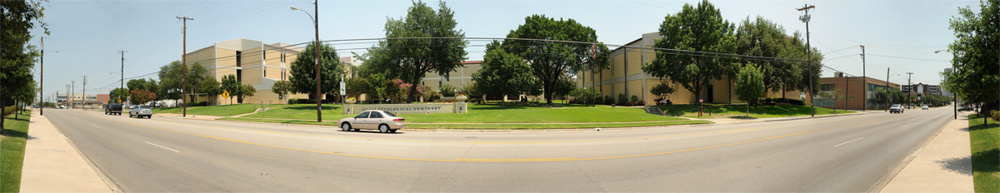

Pinbox.js
Below are photos of the East Dallas area in and and around the Dallas Theological Seminary campus.
Live Oak Street
Convent Street

Swiss Land

Below are photos of the East Dallas area in and and around the Dallas Theological Seminary campus.